It's under development and as yet totally unstyled so they're a bit ugly.
Not shown here is the rather nice JS error checking which happens when you hit submit from pages like number 3. It'll stop you if things are wrong, highlighting the bits it's talking about. It'll warn you for other things like empty or duplicate options.
Current opening screen
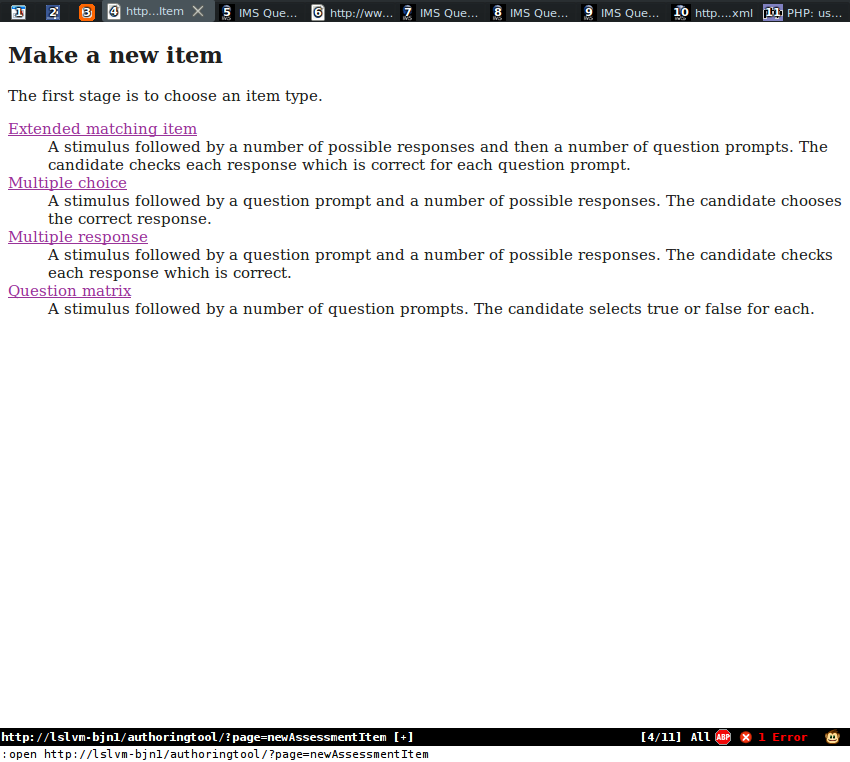Clicked "multiple choice"
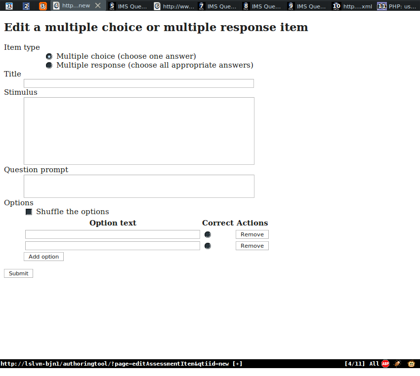Filled in some values
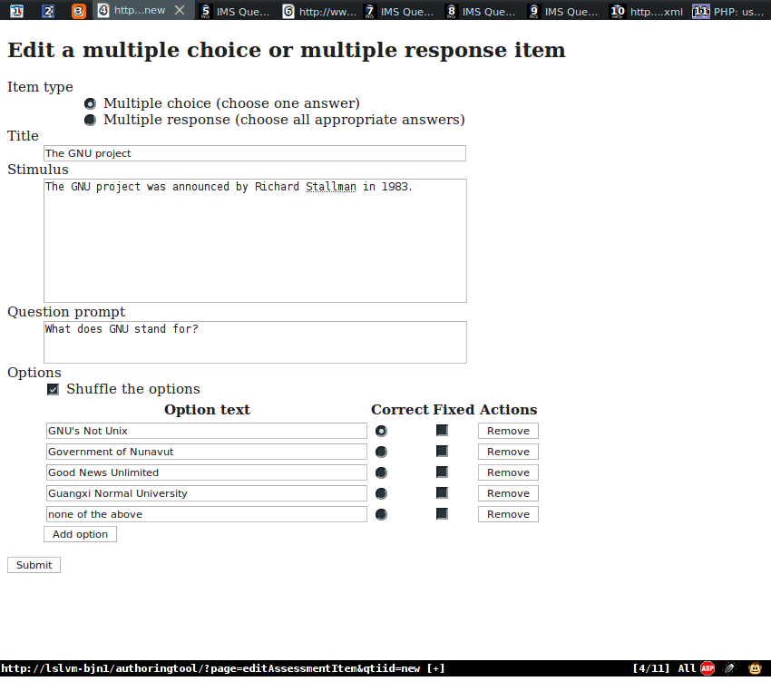Pressed submit, a preview and some options are shown
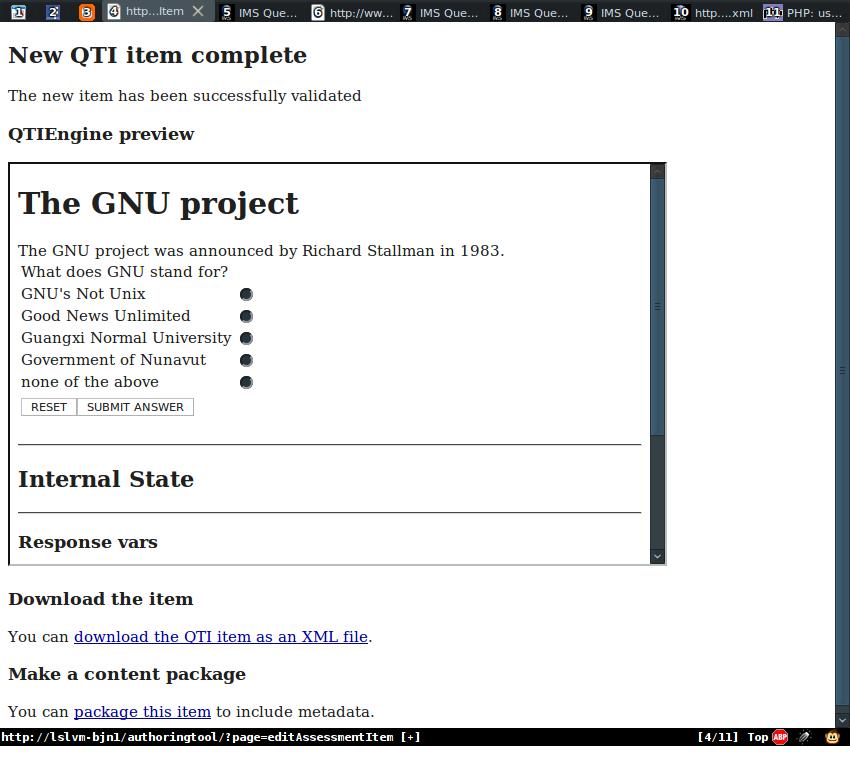Used the preview, checked "none of the above" and submitted. It shows a score of 0 since that's wrong
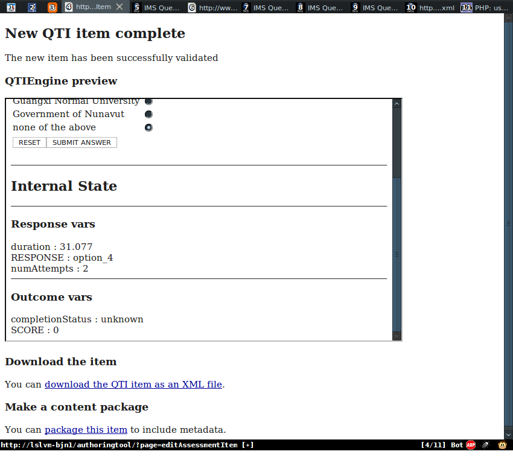Clicked "download as XML"
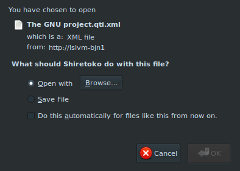That XML opened in gvim
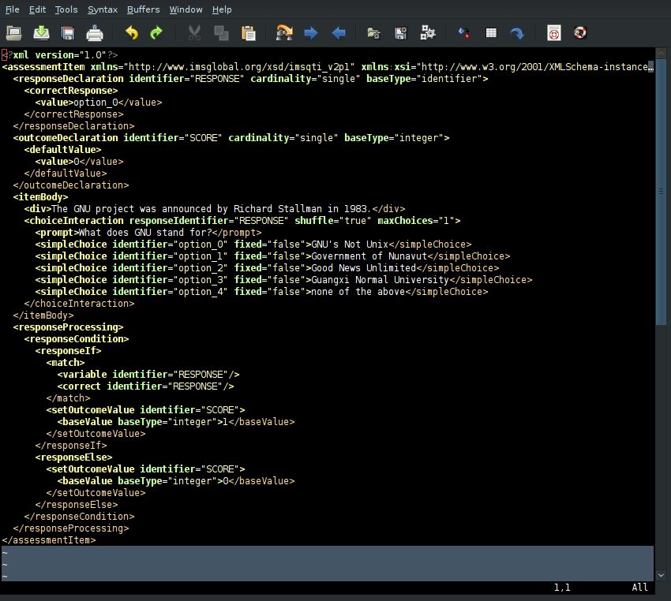Clicked "package the item"
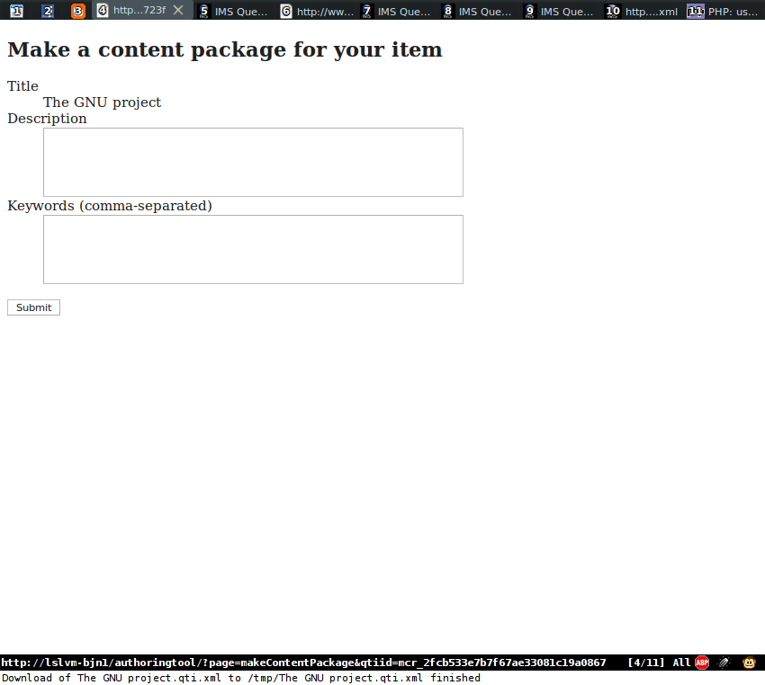Filled in the metadata
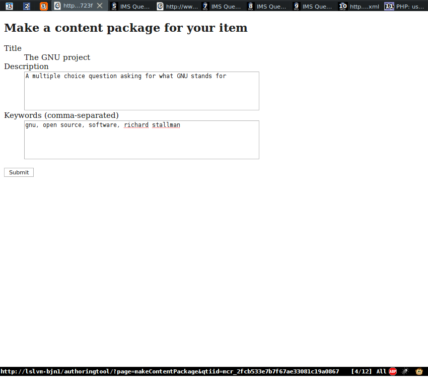Pressed submit
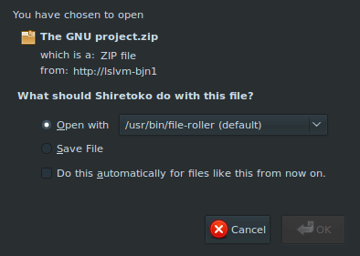The content package opened in fileroller
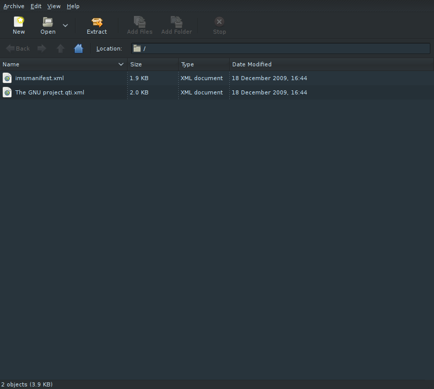The manifest file opened in gvim
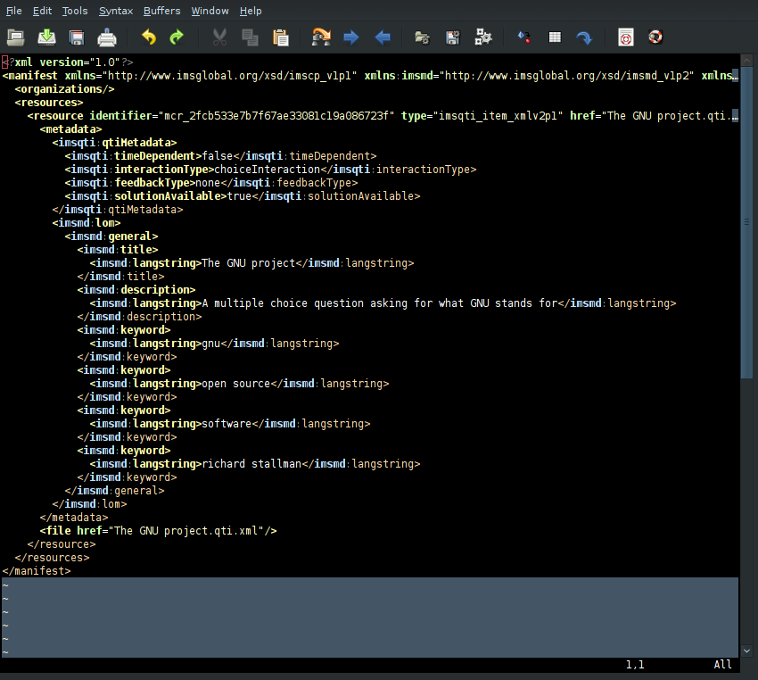The item list page (no links to it yet), which shows all the assessment items currently in memory (session data). This shows new, as-yet untitled items too, and any half-edited things
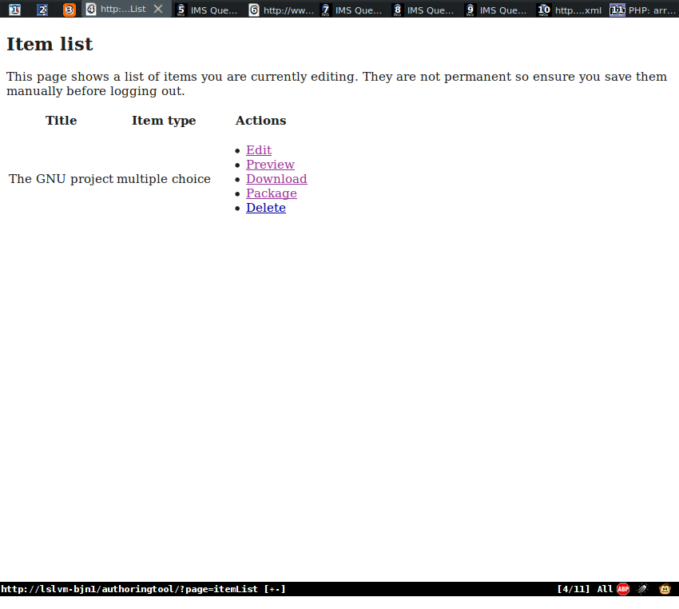EMI editing page
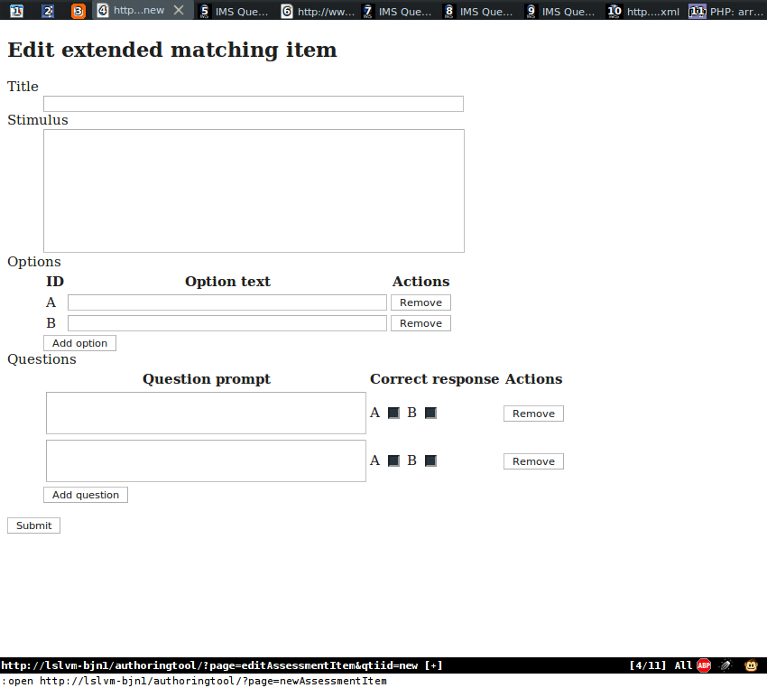...with some extra options added -- they pop in with Javascript, it's quite nice
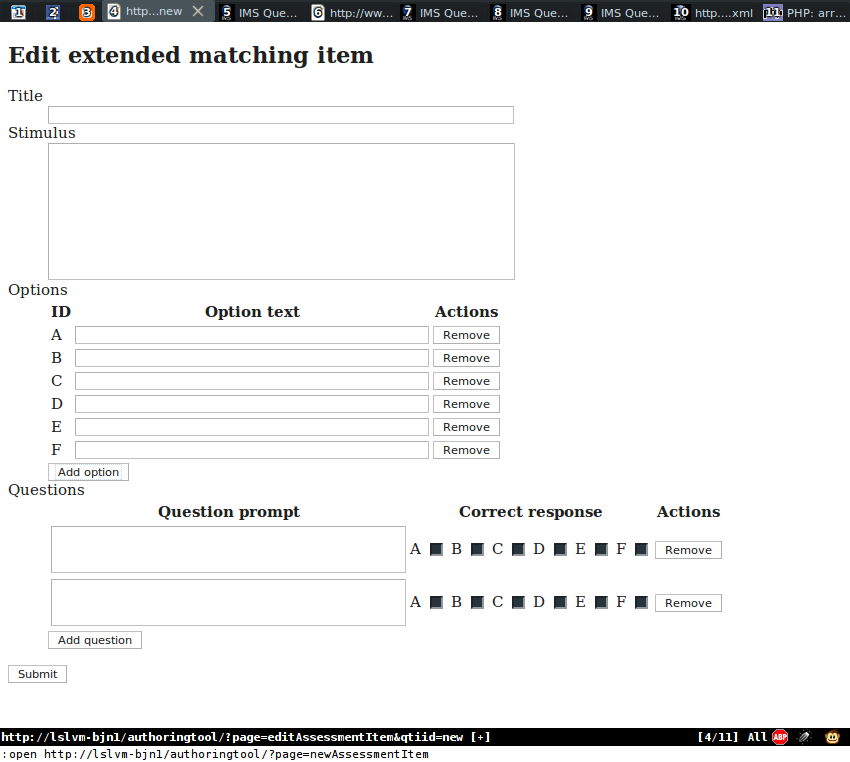Multiple response editing page
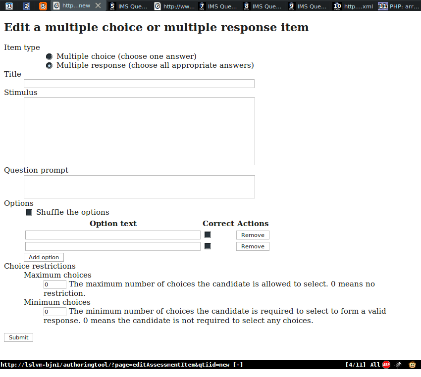Question matrix editing page
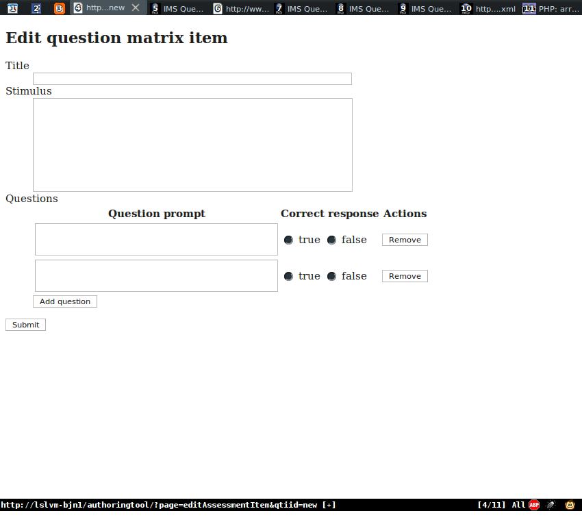{kind=link}
{kind=link}
{kind=link}
{kind=link}
{kind=link}
{kind=link}
{kind=link}
{kind=link}
{kind=link}
{kind=link}
{kind=link}
{kind=link}
{kind=link}
{kind=link}
{kind=link}
{kind=link}
{kind=link}